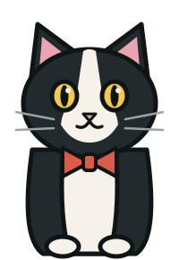
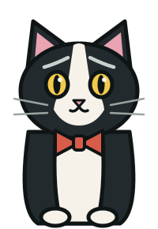
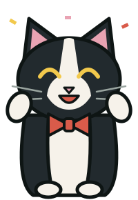
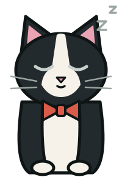
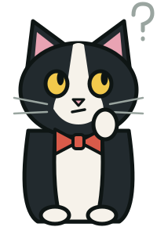
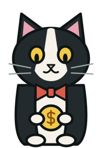
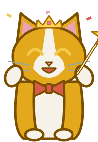
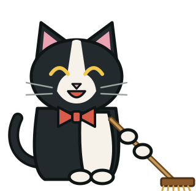
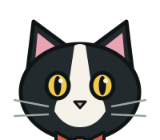
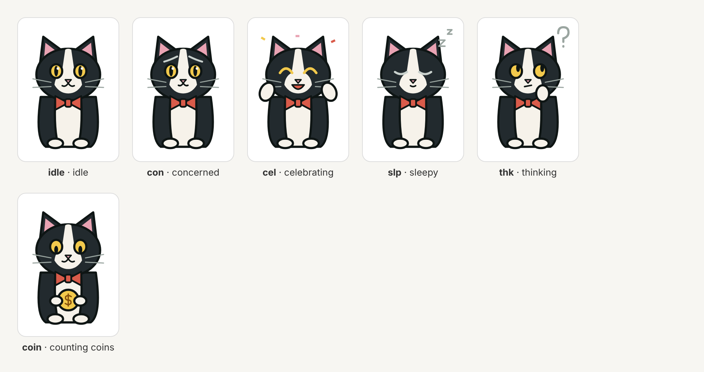

Standalone SVGs from the app (colors: fur #222a2e, outline #0e1514, white #f6f2ea, pink #e9a3b3, bow tie #d95b4a, eyes #f2c94c). Open any file in a browser, Figma, Inkscape or Illustrator, or open it in Notepad to copy the code. cat-library-defs.svg is the whole set as reusable parts.









